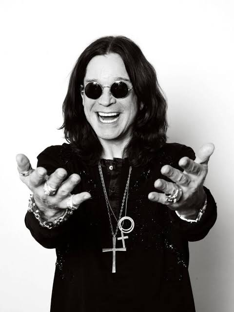

Cinema
"Back to the Beginning" nos Cinemas
O filme-concerto que registra o lendário show final do Black Sabbath e a última vez de Ozzy nos palcos estreia nos cinemas mundiais em 28 de outubro de 2026.
Saber mais →De Birmingham para os palcos do mundo, Ozzy Osbourne moldou as diretrizes do Heavy Metal. Seja liderando o revolucionário Black Sabbath ou construindo uma das jornadas solo mais lendárias da música, sua voz e sua atitude indomável redefiniram gerações. O Madman nos deixou, mas sua obra permanece viva, ecoando na eternidade.
"De todas as coisas que perdi, sinto mais falta da minha mente." — Ozzy Osbourne
A carreira solo de Ozzy provou que seu brilho era imparável. Ao lado do lendário guitarrista Randy Rhoads, ele deu vida a hinos imortais como "Crazy Train" e "Mr. Crowley". Sua trajetória nos palcos ficou marcada por performances teatrais viscerais, excessos inacreditáveis e uma conexão única e mística com milhões de fãs que se autoproclamaram parte do seu exército da noite.
Mais do que um vocalista, Ozzy se tornou um ícone da cultura pop e o padrinho supremo do metal mundial. Sua indução dupla ao Rock and Roll Hall of Fame e os múltiplos prêmios Grammy são apenas pequenos reflexos de uma força da natureza que desafiou a própria ciência e o tempo. Enquanto houver uma guitarra distorcida ecoando em algum lugar do planeta, o espírito de Ozzy Osbourne estará lá.

O filme-concerto que registra o lendário show final do Black Sabbath e a última vez de Ozzy nos palcos estreia nos cinemas mundiais em 28 de outubro de 2026.
Saber mais →Ozzy Osbourne recebeu uma homenagem póstuma histórica de Conquista de Vida Inteira no BRIT Awards 2026, celebrando sua influência duradoura.
Ler biografia →